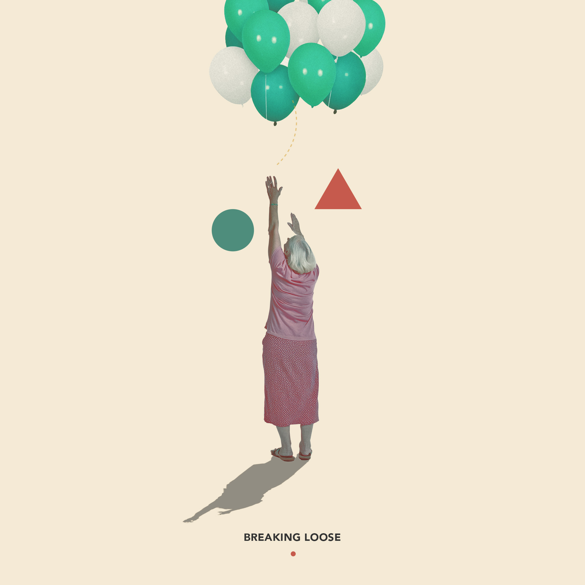
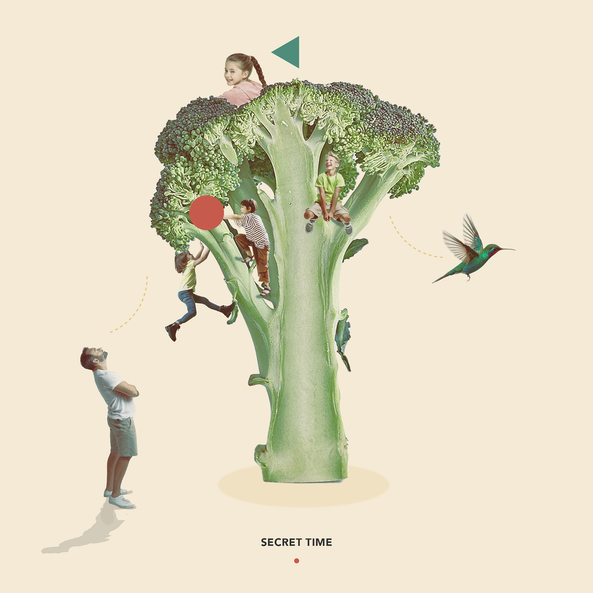
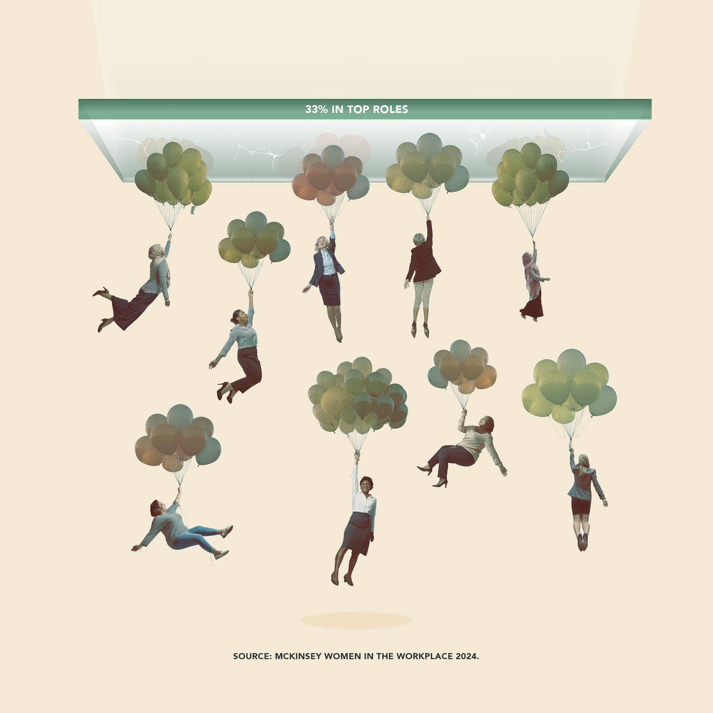

Soft absurdities
This collage collection turns everyday objects into surreal scenes. It uses humour and scale to explore freedom, play, connection, love, and ambition.





This collage collection turns everyday objects into surreal scenes. It uses humour and scale to explore freedom, play, connection, love, and ambition.


